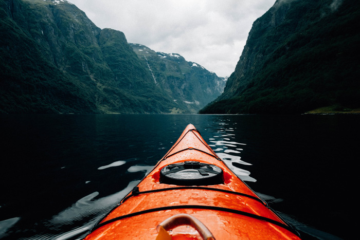
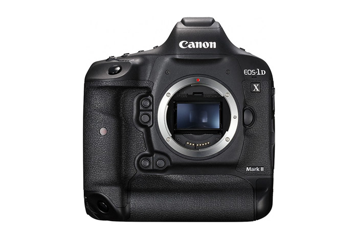
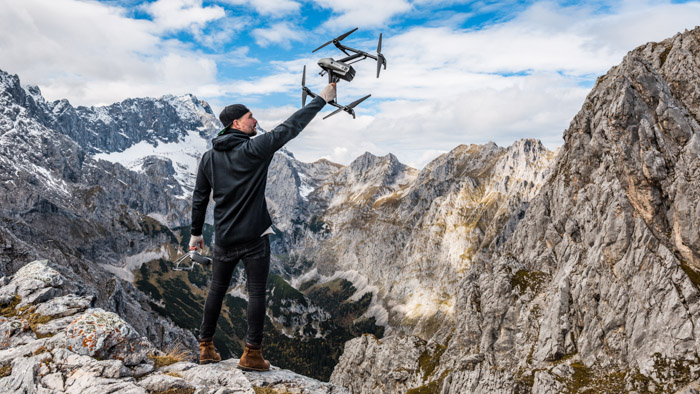
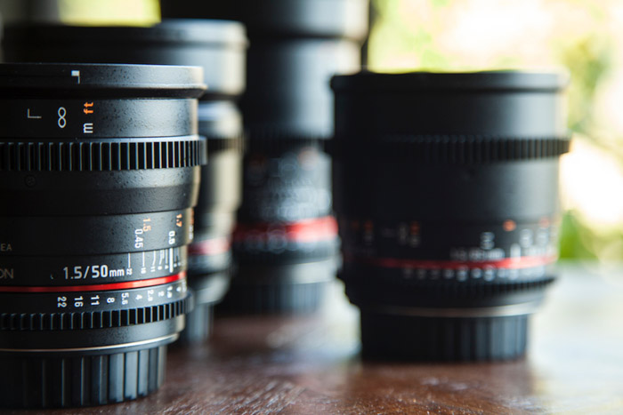

f you like photographing in the great outdoors, adventure photography is your game. Adventure photography is all about those who capture people within nature.This could be snowboarders on an Austrian piste. Or rock climbers in the Joshua Tree National Park. If adventure and photography are involved, we have the guide to answer all your questions.
f you like photographing in the great outdoors, adventure photography is your game. Adventure photography is all about those who capture people within nature.This could be snowboarders on an Austrian piste. Or rock climbers in the Joshua Tree National Park. If adventure and photography are involved, we have the guide to answer all your questions.
The subject could lose all literal meaning and be reduced to only shape, light, texture or color.
Photographed items could be objects we use in our daily life. They could also be created entirely for the purpose of art.
Adventure photography is a niche defined by stunning landscapes. You’ll also find dynamic personalities, and challenging, ever-changing shooting conditions.
You could be the participant or an observer looking for great compositions.
Finding yourself chasing snowboarders trying to perfect that wildcat spin trick is not uncommon.
Changing your usual perspective of the subject helps to create abstract images.
Waiting for mountain climbers to reach your well composed focal area. This could be how you spend your entire day. Versatility is a great aspect of this field.
Cold, wet and tiring situations will still need a sharp mind to focus and change settings in the blink of an eye. It can be difficult to stay enthusiastic.
There are many different tools to use. It all depends on your chosen area within adventure photography.
You don’t want to shoot underwater with your DSLR without proper housing. Likewise, a Go Pro isn’t a great choice for far away subjects.
Most likely, you will be away from home, or even civilization. Even for extended periods of time. How will you ensure your equipment stays usable?
Having many memory cards and batteries will help, but having a rechargeable solution is better. Think about investing in a solar panel and an external storage system.
Staying safe is the number one priority. Having a broken arm will impede your photography, your success and thus, your happiness level.
The most common choice is the DSLR. The Canon EOS-1DX Mark II is the most popular among the four. Not a beginner camera, but a DSLR is a DSLR.
You can see the different array of lenses they have. They range from zoom lenses to primes, wide angle to telephoto. This shows you that you need to have a variation.
Drones offer you unique perspectives. Either a direct, straight-on shot of someone inaccessible, a diagonal top-down shot or the infamous aerial.
All of these perspectives are great for adventure photography. Not only can they get up close, but offer us a viewpoint we are not familiar with.
This makes it interesting. Here is our list of extreme sports drones. These are a little more rugged than their counterparts, on purpose.
Lenses are what capture the moment. Every lens has different focal lengths, different apertures, and even distortions.
Your five options are wide angle, standard or telephoto, prime lens or zoom lens. A wide angle lens will capture the subject alongside the environment.
Standard lenses are very close in the way our eyes see any given scene. The telephoto option allows you to capture shots from a distance.
It also squashes the gap between the subject and the background along with it.
A prime lens offers you crisp sharpness to your images, yet it has a fixed focal length. The zoom offers versatility, yet lacks in quality at some of its focal lengths.
